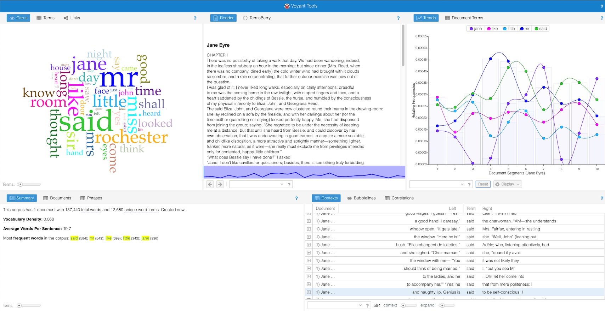
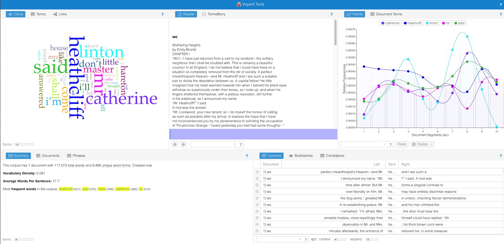

DIGIT 100
TimeMapper Assignment
Corpus Analysis
I am taking Charlotte Brontë’s Jane Eyre and comparing it to Emily Brontë’s Wuthering Heights. I have chosen these pieces since I have extensive research on Jane Eyre and minimal research on Wuthering Heights and wish to learn how the two compare. My goal is to see the difference in styles between these sisters.


Mr.
After an initial analysis, the biggest word that stuck out to me from both texts was Mr. . Based on the context I know from Jane Eyre, I can infer that most of the “Mr.”s are referring to Jane’s boss/lover Mr. Rochester. In Wuthering Heights, I have less background with the work so using context clues I believe it refers to Mr. Heathcliff. Upon examining their characters, I find it interesting how differently Charlotte and Emily write their male characters.
Jane and Catherine
I found it interesting that Jane and Catherine were repeated the same amount of times in their respective works. The reason I find it interesting is because Jane Eyre is significantly longer than Wuthering Heights, which means to me that Catherine either plays a larger role than Jane in her respective story, or there are less characters in Wuthering Heights therefore Catherine gets more screen time.
Said
The word “said” is repeated quite a bit in both of these works, which makes sense neither of them are biographies or cookbooks. But it was the context of these words and their frequency and location that I was concerned with. In Jane Eyre, said was repeated more in the middle of the story before a steep drop off, whereas in Wuthering Heights its usage steadily increased until the end of the work.
Reflection
After reviewing both of these works, I’ve better learned how these two Brontë sisters structure and style their works and how their characters mesh in their respective stories. Both of the sisters are feminists in their own respect given the time, but I feel that Emily is more progressive than Charlotte especially in the roles she gives her female characters. This was single handedly my favorite part of the reflection process, and if I had to do it again, I would include works from their third sister, Anne.